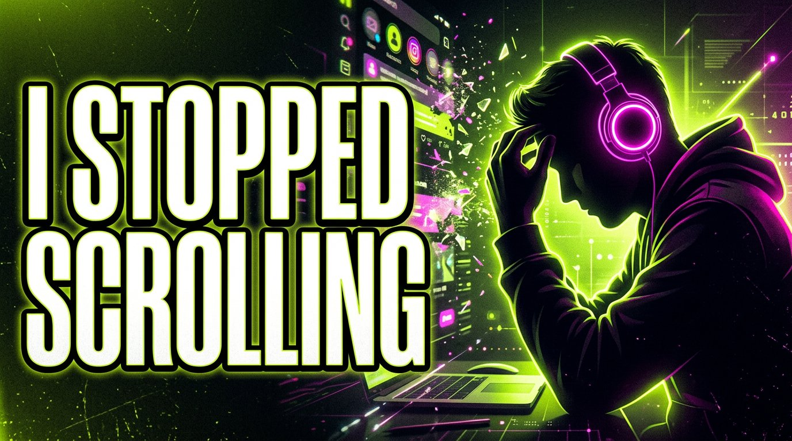
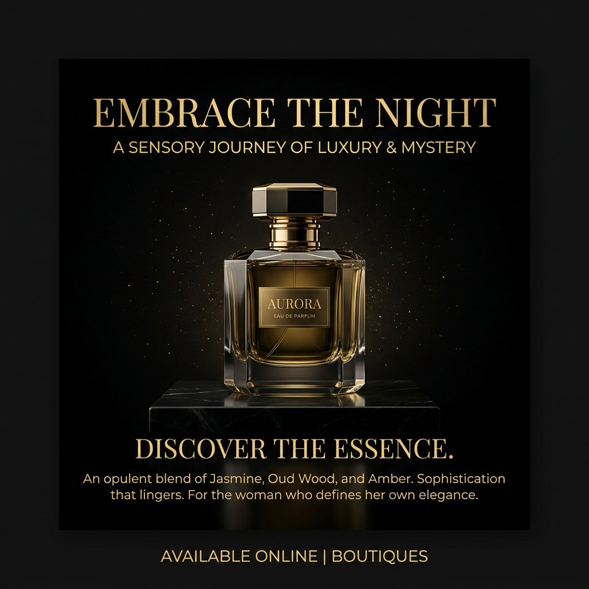
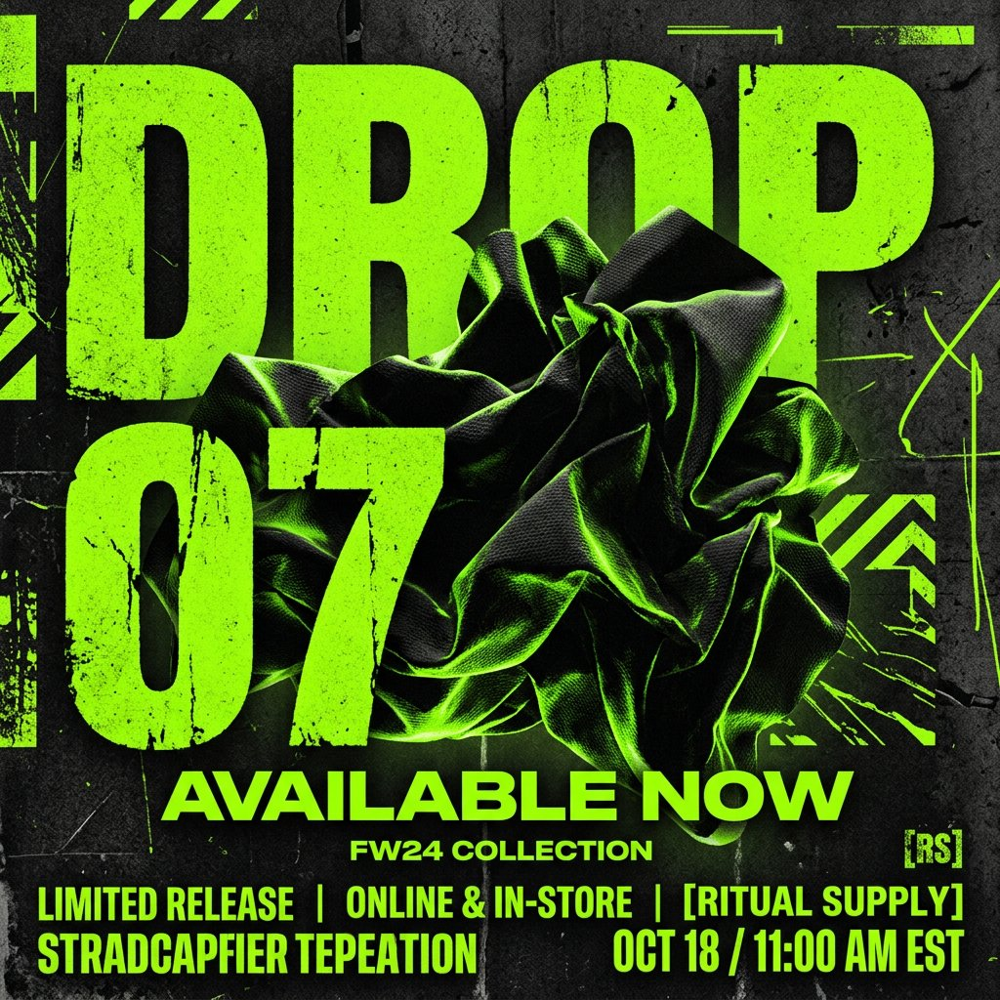
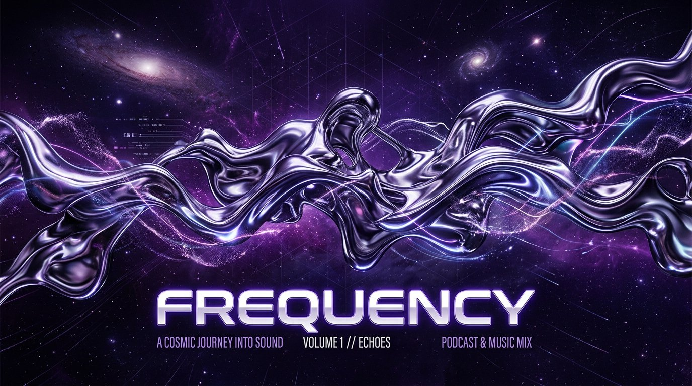
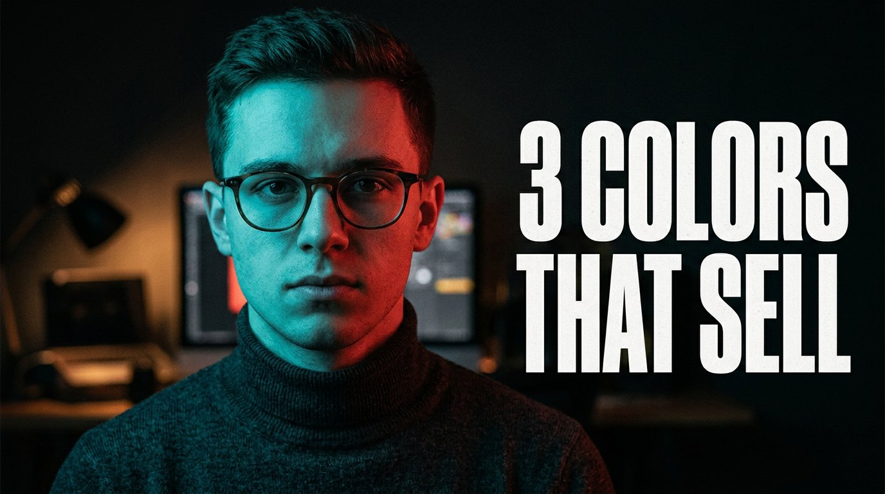
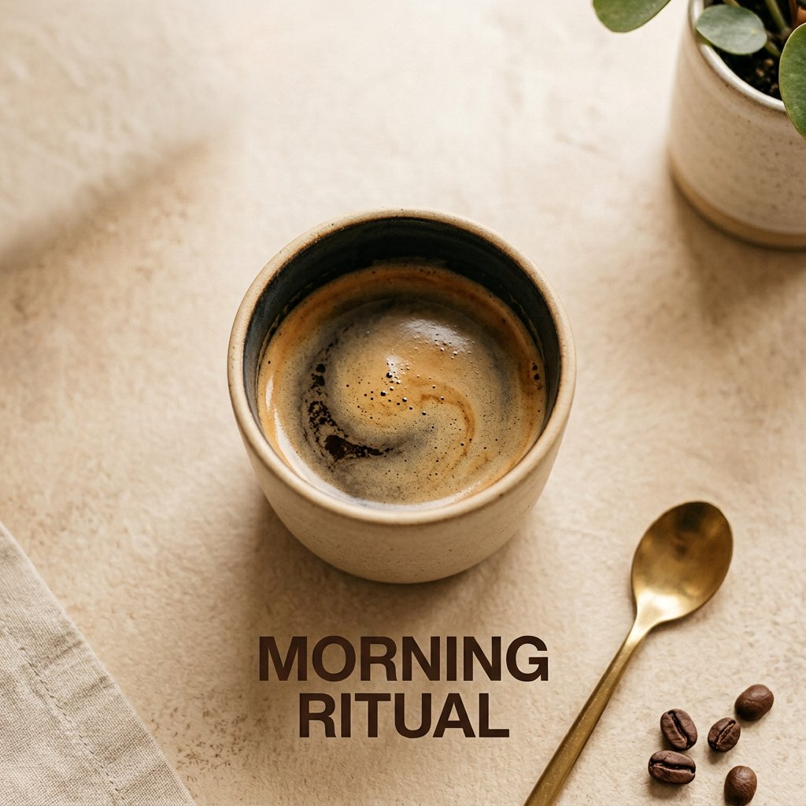
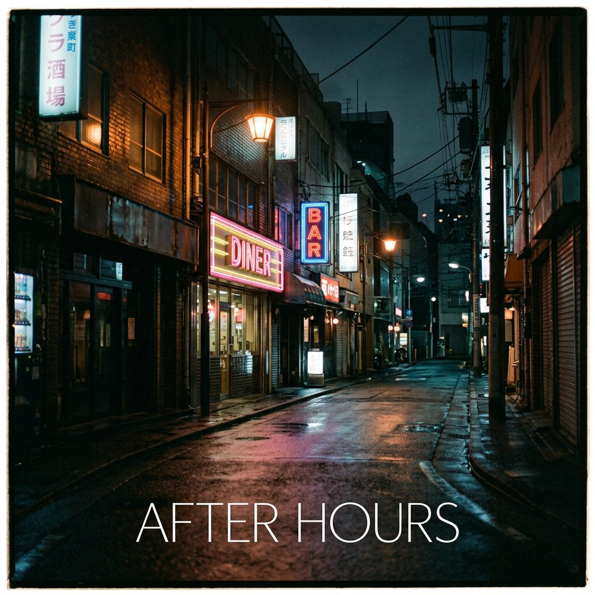
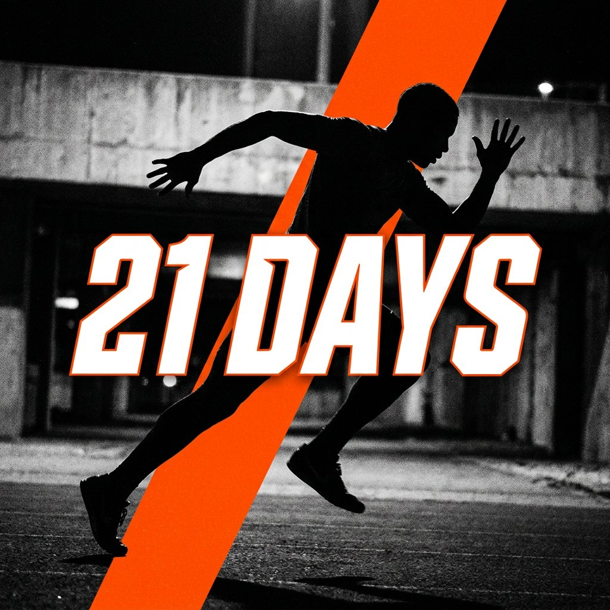
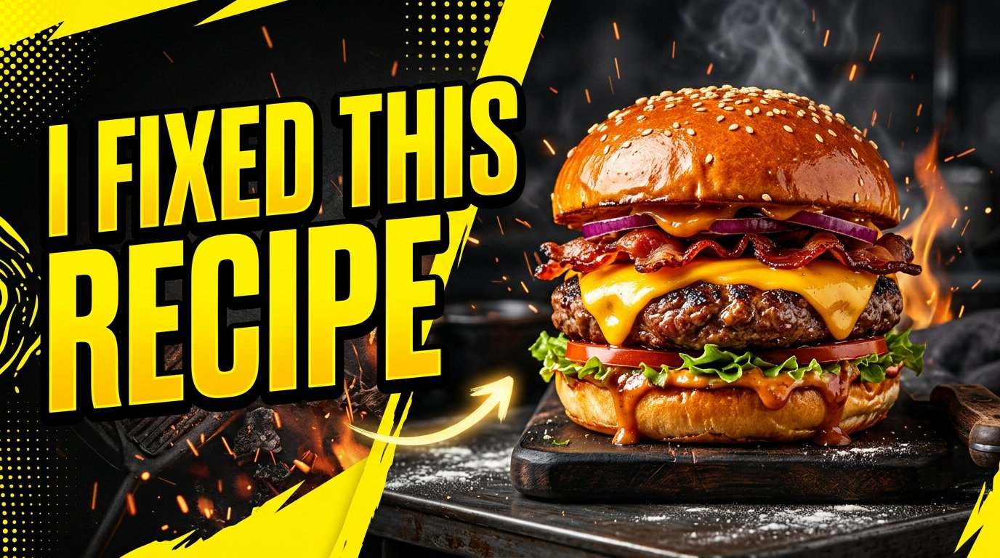

YouTubeI Stopped Scrolling
Graphic Designer Social / Cover / YouTube









About — کوتاه
طراح پستهای سوشال مدیا، کاور و تامنیل یوتیوب. کارم اینه که ایده رو به تصویری تبدیل کنم که تو فید وایسه، کلیک بگیره، و برند رو یکجور دیده بشه.